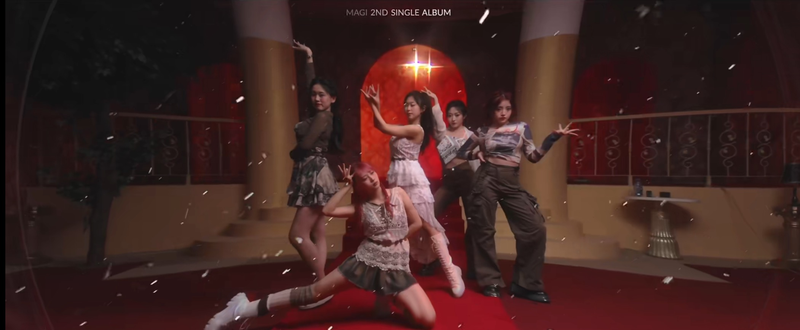

PROJECT / 01
Skein
在语言与细节中，还原一个年代。
金鸡百花电影节短片季入围作品
让真实成为故事，
让故事产生回响。
在语言与细节中，还原一个年代。
女子组合 MAGI · 新歌《Vitality》音乐录影带

MAGI / VITALITYMUSIC VIDEO▶观看完整 MV ↗从前期筹备到现场调度，协调艺人、摄影、美术与灯光团队，并对接后期制作。
教育背景、实习经历与项目实践。下载我的原版中文简历。
我是潘璇宇（Xuanyu Pan），一名连接影像创作、内容策划与数字传播的创作者。
从短片的现场调度，到电视节目的叙事结构，再到跨市场的受众研究，我关注的不只是画面如何被制作，也关注故事如何被理解、被看见。
本科就读于南京传媒学院电影学专业，现于利兹大学攻读电影研究硕士。普通话与粤语母语背景，让我对地域文化、语言节奏和人物表达保持敏感。
MAGI MV 跨平台播放
腾讯内容累计曝光
语言：普通话 / 粤语 / 英语
跨文化视角与实践
点击展开每一段经历。
选题研究 / 剧本与分镜 / 采访设计 / 表演与语言细节 / 视听叙事
前期筹备 / 场景与道具 / 现场调度 / 跨部门协作 / 素材及后期对接
受众细分 / 竞品研究 / 品牌叙事 / 社交内容 / 跨平台传播策略
Premiere Pro · Photoshop · Office · SQL · Python